We fund veterinary research grants at Oregon State University and Washington State University, award annual scholarships to veterinary students focused on camelid medicine, and bring llama and alpaca owners together through education events across the Pacific Northwest.
We award grants to qualified veterinary researchers at OSU and WSU, supporting studies in infectious disease, immunology, reproduction, and nutrition. Results are published and shared with owners and veterinarians everywhere.
$820,000+ invested since 1987Each year we award scholarships to veterinary students at OSU and WSU who are passionate about camelid medicine. Scholarship recipients go on to practice and publish, multiplying the impact of every gift.
$36,000+ awarded to dateThrough Meet & Greet events and the annual conference at OSU's Carlson College of Veterinary Medicine, we connect llama and alpaca owners with leading camelid veterinarians across the Pacific Northwest.
Events open to all owners"Regardless of the size of their herd or the location of their barn, every camelid and every owner benefits from the research funded by the NWCF."
— North West Camelid FoundationEvery donation goes directly to veterinary research and scholarships. No overhead. No administrative fees. Pure impact.
There are several ways to support the NWCF's mission — from making a gift to attending an event near you.
Every contribution — large or small — directly supports the veterinary science that llama and alpaca owners depend on. Make your gift online or contact us to learn about giving options.
NWCamelidFoundation.org